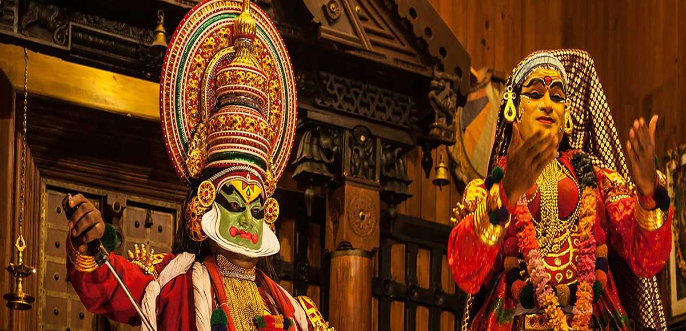
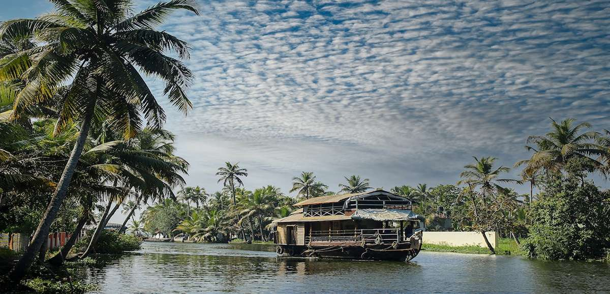

Kerala is a beautiful state located in the southwestern region of India, known for its palm-lined beaches, serene backwaters, and lush greenery. Kerala tourism experience is truly one-of-a-kind, offering a unique blend of natural beauty, cultural heritage, and culinary delights. The backwaters of Kerala are the highlight of the state, and a ride on a traditional houseboat is a must-do activity. Visitors can enjoy the tranquil waters and beautiful scenery while feasting on delicious local cuisine. The state is also famous for its Ayurvedic treatments, offering visitors a chance to rejuvenate their mind and body. The beaches of Kerala are stunning, and visitors can relax on the golden sand or take part in water sports. Overall, Kerala tourism is an unforgettable experience that offers a perfect blend of relaxation, adventure, and cultural exploration.
In addition to its natural beauty and cultural heritage, Kerala also boasts a vibrant and diverse art scene. The state is home to many traditional art forms such as Kathakali, Mohiniyattam, and Theyyam, which are performed by skilled artists wearing elaborate costumes and makeup. Visitors can witness these art forms at various festivals and cultural events throughout the year. The state is also renowned for its handicrafts, such as handloom textiles, wood carvings, and metal crafts. Visitors can purchase these unique items at local markets and support the local artisans. Kerala is also a food lover's paradise, with a diverse range of dishes that are a perfect blend of spices, flavors, and textures. From seafood delicacies to vegetarian curries, Kerala's cuisine is a treat for the taste buds. Overall, a visit to Kerala offers a chance to explore a unique and beautiful part of India and immerse oneself in its rich culture and traditions.
The backwaters in Kerala are a chain of brackish lagoons and lakes lying parallel to the Arabian Sea coast (known as the Malabar Coast). Houseboat or Kettuvallam rides in backwaters are a major tourist attraction in kerala. Backwater tourism is centered mostly around[20] of Kerala like Alleppey, Kumarakom, Ashtamudi Lake, Kollam, Ponnani, Kavvayi Backwaters, Vembanad and Bekal. Boat races held during festival seasons are also a major tourist attraction in the backwater regions.
The backwater network includes large lakes such as the Ashtamudi Lake, the largest among them, linked by 1500 km of canals, both man-made and natural and fed by several rivers, and extending virtually the entire length of Kerala state. The backwaters were formed by the action of waves and shore currents creating low barrier islands across the mouths of the many rivers flowing down from the Western Ghats range.